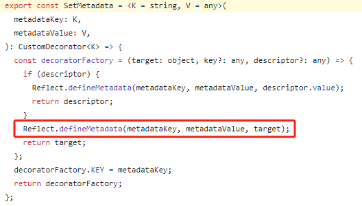

回顾
前两篇中主要介绍了Nest的入门使用以及一些框架特性，包括模块、控制器、服务注入、Http服务、数据库服务等功能，都涉及到很多的装饰器，这一篇会介绍Nest中的装饰器，以及工作原理。
引言
装饰器在 Nest 中的角色
- 在 NestJS 中，装饰器是一种强大的工具，对于扩展或修改类、方法、属性或参数的行为，提供了优雅而灵活的方式，使开发人员能够在不修改原始代码的情况下添加或修改功能。
- 装饰器应用非常广泛，包括路由、控制器、服务、依赖注入等。它们可以用于定义路由处理程序、中间件、管道，使开发者能够更专注于业务逻辑的实现，而不必过多关注底层框架细节。
- NestJS 通过装饰器，提供了声明式的编程方式，使代码更清晰、易于维护。开发者可以通过在类、方法或属性上应用装饰器来定义元数据或增强其行为，提高代码的可读性和可维护性。
NestJS 装饰器基础
类装饰器
- 模块相关
@Module(): 声明 Nest 模块。import { Module } from '@nestjs/common'; import { AppController } from './app.controller'; import { AppService } from './app.service'; @Module({ controllers: [AppController], providers: [AppService], }) export class AppModule {}
@Global(): 声明全局模块。// helper.module.ts import { Module, Global } from '@nestjs/common'; import { HelperService } from './helper.service'; @Global() @Module({ providers: [HelperService], exports: [HelperService], }) export class HelperModule {}
创建了HelperModule，并导入了HelperService，同时使用@Global()装饰器标记为全局模块。// helper.service.ts import { Injectable } from '@nestjs/common'; @Injectable() export class HelperService { generateUniqueId(): string { // 实际应用中可能会使用更复杂的算法 return Math.random().toString(36).substring(7); } }
HelperService提供了一个生成唯一标识符的简单功能。// app.module.ts import { Module } from '@nestjs/common'; import { HelperModule } from './helper/helper.module'; import { AppController } from './app.controller'; import { AppService } from './app.service'; @Module({ imports: [HelperModule], controllers: [AppController], providers: [AppService], }) export class AppModule {}
通过将HelperModule导入到AppModule中，我们确保整个应用程序都可以访问HelperService提供的功能。// app.controller.ts import { Controller, Get } from '@nestjs/common'; import { AppService } from './app.service'; // import { HelperService } from './helper/helper.service'; 不需要再单独导入 @Controller() export class AppController { constructor( private readonly appService: AppService, private readonly helperService: HelperService, ) {} @Get() getHello(): string { const uniqueId = this.helperService.generateUniqueId(); const message = this.appService.getAppMessage(); return `${message} Unique ID: ${uniqueId}`; } }
HelperService被注入到AppController中，然后使用generateUniqueId方法生成一个唯一标识符。通过这种方式，你可以在整个应用程序中的任何地方注入HelperService并使用其中的方法，而不需要在每个模块中都重复导入或提供HelperService。这有助于避免代码重复，提高可维护性，并确保全局模块中的功能在整个应用中可用。 - 控制器相关
@Controller(): 声明模块里的控制器。import { Controller, Get } from '@nestjs/common'; @Controller('/api') export class AppController { @Get() getHello(): string { return 'Hello World!'; } }
- 提供者（服务）相关
@Injectable(): 声明模块里可以注入的提供者（服务）。@Injectable() export class AppService { getHello(): string { return 'Hello World!'; } }
@Inject：通过 token 手动指定注入的 provider，token 可以是 class 或者 string// app.service.ts import { Injectable, Inject } from '@nestjs/common'; import { LoggerService } from './logger.service'; @Injectable() export class AppService { constructor(@Inject(LoggerService) private readonly logger: LoggerService) {} getAppMessage(): string { this.logger.log('Getting app message...'); return 'Hello from AppService!'; } }
@Optional(): 声明注入的依赖服务是可选的，可以为空。(注入的依赖如果没有的话，创建对象时会报错)// optional.service.ts import { Injectable, Optional } from '@nestjs/common'; @Injectable() export class OptionalService { getData(): string { return 'Optional Service Data'; } } // app.service.ts import { Injectable, Optional } from '@nestjs/common'; import { OptionalService } from './optional.service'; @Injectable() export class AppService { constructor(@Optional() private optionalService: OptionalService) {} getHello(): string { const optionalData = this.optionalService ? this.optionalService.getData() : 'Optional service is not available'; return `Hello World! ${optionalData}`; } }
方法装饰器
- HTTP 相装饰器
@Get()、@Post()、@Put()、@Patch()、@Delete()、@Options()、@Head()等装饰器：import { Controller, Get, Post, Put, Patch, Delete } from '@nestjs/common'; @Controller('example') class ExampleController { @Get() getData() { return 'GET request handled'; } @Post() postData() { return 'POST request handled'; } @Put() putData() { return 'PUT request handled'; } @Patch() patchData() { return 'PATCH request handled'; } @Delete() deleteData() { return 'DELETE request handled'; } }
@HttpCode(): 修改响应的状态码。import { Controller, Get, HttpCode } from '@nestjs/common'; @Controller('example') export class ExampleController { @Get() @HttpCode(201) // 将 HTTP 状态码设置为 201 Created getExample() { return '带有自定义状态码的示例响应'; } }
@Header(): 修改响应头。import { Controller, Get, Header } from '@nestjs/common'; @Controller('example') export class ExampleController { @Get() @Header('Cache-Control', 'no-store') // 将 Cache-Control 头设置为 'no-store' @Header('Custom-Header', 'Custom-Value') // 添加自定义头部 getExample() { return '带有自定义头部的示例响应'; } }
@Redirect(): 指定重定向的 URL。import { Controller, Get, Redirect } from '@nestjs/common'; @Controller('example') export class ExampleController { @Get('redirect') @Redirect('https://www.example.com') // 重定向到指定的 URL getRedirectExample() { // 由于重定向，此方法将不会被执行 } }
@Render(): 指定渲染用的模板引擎。import { Controller, Get, Render } from '@nestjs/common'; @Controller('example') export class ExampleController { @Get('render') @Render('index') // 使用默认视图引擎渲染 'index' 模板 getRenderExample() { return { message: '你好，NestJS！' }; // 传递给视图的数据 } }
参数装饰器
- 请求对象和响应对象相关
@Req(),@Request(): 注入 request 对象。import { Controller, Get, Req, Request } from '@nestjs/common'; import { Request as ExpressRequest } from 'express'; @Controller('example') class ExampleController { @Get() getData(@Req() request: ExpressRequest) { return `Request URL: ${request.url}`; } @Get('/alternative') getDataAlternative(@Request() request: ExpressRequest) { return `Request URL (Alternative): ${request.url}`; } }
@Res(),@Response(): 注入 response 对象，import { Controller, Get, Res, Response } from '@nestjs/common'; import { Response as ExpressResponse } from 'express'; @Controller('example') class ExampleController { @Get() sendData(@Res() response: ExpressResponse) { response.send('Hello, World!'); } @Get('/alternative') sendDataAlternative(@Response() response: ExpressResponse) { response.send('Hello, World! (Alternative)'); } }
- 路由参数相关
@Param(): 取出 URL 中的参数。@Param('id')用于提取 URL 中的参数，并将其作为方法参数传递给getData方法。import { Controller, Get, Param } from '@nestjs/common'; @Controller('example') class ExampleController { @Get(':id') getData(@Param('id') id: string) { return `Data for ID ${id}`; } }
@Query(): 取出 query 部分的参数。@Query('param')用于提取 URL 查询参数，并将其作为方法参数传递给getData方法。import { Controller, Get, Query } from '@nestjs/common'; @Controller('example') class ExampleController { @Get() getData(@Query('param') param: string) { return `Received query parameter: ${param}`; } }
@Body(): 取出请求 body，通过 DTO class 来接收。@Body()用于提取请求体中的数据，并将其作为方法参数传递给createItem方法。import { Controller, Post, Body } from '@nestjs/common'; class CreateItemDto { name: string; description: string; } @Controller('example') class ExampleController { @Post() createItem(@Body() createItemDto: CreateItemDto) { // Logic to create an item using the provided data return `Created item: ${JSON.stringify(createItemDto)}`; } }
@Headers(): 取出某个或全部请求头。@Headers('authorization')用于提取请求头中的authorization数据，并将其作为方法参数传递给getData方法import { Controller, Get, Headers } from '@nestjs/common'; @Controller('example') class ExampleController { @Get() getData(@Headers('authorization') authorization: string) { return `Authorization header: ${authorization}`; } }
@Session(): 取出 session 对象，需要启用 express-session 中间件。@Session()装饰器允许你访问存储在用户会话中的数据。确保在使用
@Session()装饰器之前，你已经正确配置并启用了express-session中间件。import { Controller, Get, Session } from '@nestjs/common'; @Controller('example') class ExampleController { @Get() getData(@Session() session: Record<string, any>) { // Access session data const userId = session.userId; return `User ID from session: ${userId}`; } }
@HostParam(): 取出 host 里的参数。import { Controller, Get, HostParam } from '@nestjs/common'; @Controller('example/:subdomain') class ExampleController { @Get() getSubdomain(@HostParam('subdomain') subdomain: string) { return `Subdomain: ${subdomain}`; } }
功能性装饰器@UseGuards() 添加身份验证、授权等守卫
import { Controller, Get, UseGuards } from '@nestjs/common';
import { AuthGuard } from './auth.guard';
@Controller('secured')
class SecuredController {
@Get()
@UseGuards(AuthGuard)
getSecuredData() {
return 'Secured data';
}
}
@UseInterceptors() 使用拦截器
import { Controller, Get, UseInterceptors } from '@nestjs/common';
import { LoggingInterceptor } from './logging.interceptor';
@Controller('example')
@UseInterceptors(LoggingInterceptor)
class ExampleController {
@Get()
getData() {
return 'GET request handled';
}
}
@UseFilters() 使用异常过滤器
import { Controller, Get, UseFilters } from '@nestjs/common';
import { CustomExceptionFilter } from './custom-exception.filter';
@Controller('example')
@UseFilters(CustomExceptionFilter)
class ExampleController {
@Get()
getData() {
throw new Error('Unexpected error');
}
}
@UsePipes() 使用管道
import { Controller, Get, UsePipes, ValidationPipe } from '@nestjs/common';
@Controller('example')
@UsePipes(new ValidationPipe())
class ExampleController {
@Get()
getData() {
// Some logic here
}
}
@Next(): 注入调用下一个 handler 的 next 方法。
@Next() 装饰器注入 next 函数，该函数用于将控制传递给下一个中间件或处理程序函数。import { Injectable } from '@nestjs/common';
@Injectable()
export class MyMiddleware {
use(req: any, res: any, next: () => void) {
console.log('Before handling the request...');
// 调用 @Next() 装饰器注入的 next 函数，将控制传递给下一个中间件或处理程序
next();
console.log('After handling the request...');
}
}
@SetMetadata(): 在 class 或者 handler 上添加 metadata。
这个装饰器的底层实现就是 Reflect.defineMetadata； 怎么使用的，举个例子：我们可以使用 @SetMetadata() 装饰器结合自定义装饰器和拦截器来实现一个基本的权限控制系统。首先，定义一个自定义装饰器 @Roles() 用于在处理程序上设置角色权限：// roles.decorator.ts
import { SetMetadata } from '@nestjs/common';
export const Roles = (...roles: string[]) => SetMetadata('roles', roles);
RolesGuard检查用户的角色是否符合处理程序所需的角色：// roles.guard.ts
import { CanActivate, ExecutionContext, Injectable } from '@nestjs/common';
import { Reflector } from '@nestjs/core';
@Injectable()
export class RolesGuard implements CanActivate {
constructor(private reflector: Reflector) {}
canActivate(context: ExecutionContext): boolean {
const requiredRoles = this.reflector.get<string[]>('roles', context.getHandler());
if (!requiredRoles) {
return true; // 如果没有设置角色要求，则允许访问
}
const { user } = context.switchToHttp().getRequest();
return requiredRoles.some(role => user.roles?.includes(role));
}
}
// app.controller.ts
import { Controller, Get, UseGuards } from '@nestjs/common';
import { RolesGuard } from './roles.guard';
import { Roles } from './roles.decorator';
@Controller('app')
export class AppController {
@Get('admin')
@Roles('admin') // 使用 @Roles 装饰器设置角色要求
@UseGuards(RolesGuard) // 使用守卫进行权限检查
getAdminData() {
return 'Admin Data';
}
@Get('user')
@Roles('user') // 使用 @Roles 装饰器设置角色要求
@UseGuards(RolesGuard) // 使用守卫进行权限检查
getUserData() {
return 'User Data';
}
}
@Roles() 装饰器用于设置每个处理程序需要的角色权限，然后 RolesGuard 拦截器会检查用户是否具备足够的权限。这里使用了 @UseGuards() 装饰器来将 RolesGuard 拦截器应用于相应的处理程序。通过使用元数据，我们能够动态地设置和获取处理程序的角色权限要求，实现了一个基本的权限控制系统。这种方式提供了更灵活和可扩展的权限管理机制。
@UseGuards() 添加身份验证、授权等守卫
import { Controller, Get, UseGuards } from '@nestjs/common'; import { AuthGuard } from './auth.guard'; @Controller('secured') class SecuredController { @Get() @UseGuards(AuthGuard) getSecuredData() { return 'Secured data'; } }
@UseInterceptors() 使用拦截器
import { Controller, Get, UseInterceptors } from '@nestjs/common'; import { LoggingInterceptor } from './logging.interceptor'; @Controller('example') @UseInterceptors(LoggingInterceptor) class ExampleController { @Get() getData() { return 'GET request handled'; } }
@UseFilters() 使用异常过滤器
import { Controller, Get, UseFilters } from '@nestjs/common'; import { CustomExceptionFilter } from './custom-exception.filter'; @Controller('example') @UseFilters(CustomExceptionFilter) class ExampleController { @Get() getData() { throw new Error('Unexpected error'); } }
@UsePipes() 使用管道
import { Controller, Get, UsePipes, ValidationPipe } from '@nestjs/common'; @Controller('example') @UsePipes(new ValidationPipe()) class ExampleController { @Get() getData() { // Some logic here } }
@Next(): 注入调用下一个 handler 的 next 方法。
@Next() 装饰器注入 next 函数，该函数用于将控制传递给下一个中间件或处理程序函数。import { Injectable } from '@nestjs/common'; @Injectable() export class MyMiddleware { use(req: any, res: any, next: () => void) { console.log('Before handling the request...'); // 调用 @Next() 装饰器注入的 next 函数，将控制传递给下一个中间件或处理程序 next(); console.log('After handling the request...'); } }
@SetMetadata(): 在 class 或者 handler 上添加 metadata。
这个装饰器的底层实现就是 Reflect.defineMetadata；
怎么使用的，举个例子：
我们可以使用
@SetMetadata() 装饰器结合自定义装饰器和拦截器来实现一个基本的权限控制系统。首先，定义一个自定义装饰器
@Roles() 用于在处理程序上设置角色权限：// roles.decorator.ts import { SetMetadata } from '@nestjs/common'; export const Roles = (...roles: string[]) => SetMetadata('roles', roles);
接下来，创建一个守卫
RolesGuard检查用户的角色是否符合处理程序所需的角色：// roles.guard.ts import { CanActivate, ExecutionContext, Injectable } from '@nestjs/common'; import { Reflector } from '@nestjs/core'; @Injectable() export class RolesGuard implements CanActivate { constructor(private reflector: Reflector) {} canActivate(context: ExecutionContext): boolean { const requiredRoles = this.reflector.get<string[]>('roles', context.getHandler()); if (!requiredRoles) { return true; // 如果没有设置角色要求，则允许访问 } const { user } = context.switchToHttp().getRequest(); return requiredRoles.some(role => user.roles?.includes(role)); } }
最后，将这个守卫应用于一个需要权限控制的控制器：
// app.controller.ts import { Controller, Get, UseGuards } from '@nestjs/common'; import { RolesGuard } from './roles.guard'; import { Roles } from './roles.decorator'; @Controller('app') export class AppController { @Get('admin') @Roles('admin') // 使用 @Roles 装饰器设置角色要求 @UseGuards(RolesGuard) // 使用守卫进行权限检查 getAdminData() { return 'Admin Data'; } @Get('user') @Roles('user') // 使用 @Roles 装饰器设置角色要求 @UseGuards(RolesGuard) // 使用守卫进行权限检查 getUserData() { return 'User Data'; } }
在这个例子中，
@Roles() 装饰器用于设置每个处理程序需要的角色权限，然后 RolesGuard 拦截器会检查用户是否具备足够的权限。这里使用了 @UseGuards() 装饰器来将 RolesGuard 拦截器应用于相应的处理程序。通过使用元数据，我们能够动态地设置和获取处理程序的角色权限要求，实现了一个基本的权限控制系统。这种方式提供了更灵活和可扩展的权限管理机制。
深入了解装饰器
装饰器的工作原理
- Reflect 对象
Reflect是 JavaScript 的内置对象，提供了一组静态方法，用于拦截和修改 JavaScript 操作。常见 Reflect 方法： 包括
Reflect.get、Reflect.set、Reflect.has、Reflect.apply、Reflect.construct等，用于属性获取、设置、判断存在、方法调用和实例构造等操作。let obj = { x: 42 }; let value = Reflect.get(obj, 'x'); // 42 Reflect.set(obj, 'y', 10); let hasProperty = Reflect.has(obj, 'y'); // true let result = Reflect.apply(Math.max, null, [1, 3, 5]); // 5 let instance = Reflect.construct(Date, []); // 当前时间的 Date 实例
Metadata API
但实现 Nest 用到的 api 还没有进入标准，还在草案阶段；Reflect.defineMetadata(metadataKey, metadataValue, target); Reflect.defineMetadata(metadataKey, metadataValue, target, propertyKey); let result = Reflect.getMetadata(metadataKey, target); let result = Reflect.getMetadata(metadataKey, target, propertyKey);
Reflect.defineMetadata 和 Reflect.getMetadata 分别用于设置和获取某个类的元数据，如果最后传入了属性名，还可以单独为某个属性设置元数据。
元数据的存储和读取
元数据存在哪呢？
存在类或者对象上，如果给类或者类的静态属性添加元数据，那就保存在类上；
如果给实例属性添加元数据，那就保存在实例对象上，用类似 [[metadata]] 的 key 来存的。
看上面的 api 确实看不出啥，但它支持装饰器的方式使用：
1.Reflect.metadata 装饰器
@Reflect.metadata(metadataKey, metadataValue) class Example { @Reflect.metadata(metadataKey, metadataValue) method() { } }
2.装饰器的封装： 将 Reflect.metadata 装饰器封装为更具表达力的装饰器，例如
Type、ParamTypes、ReturnType。function Type(type) { return Reflect.metadata("design:type", type); } function ParamTypes(...types) { return Reflect.metadata("design:paramtypes", types); } function ReturnType(type) { return Reflect.metadata("design:returntype", type); } @ParamTypes(String, Number) class Example { constructor(text, i) { } @ReturnType(String) get name() { return "text"; } @Type(Function) @ParamTypes(Number, Number) @ReturnType(Number) add(x, y) { return x + y; } }
然后我们就可以通过 Reflect metadata 的 api 获取这个类和对象的元数据了：
let obj = new Example("a", 1); let paramTypes = Reflect.getMetadata("design:paramtypes", obj, "add"); // [Number, Number]
NestJS中是如何实现的
先看一段源码：
@Module 装饰器调用了 Reflect.defineMetadata 来给这个类添加了一些元数据。所以我们这样用的时候：import { Module } from '@nestjs/common'; import { AppController } from './app.controller'; import { AppService } from './app.service'; @Module({ controllers: [AppController], providers: [AppService], }) export class AppModule {}
其实就是给 AppModule 添加了 controllers 的元数据和 providers 的元数据。后面创建 IOC 容器的时候就会取出这些元数据来处理。
现在 metadata 的 api 还在草案阶段，需要使用 reflect-metadata 这个 polyfill 包才行。
为什么用Typescript
完整例子
// logger.service.ts import { Injectable } from '@nestjs/common'; @Injectable() export class LoggerService { log(message: string): void { console.log(message); } } // example.service.ts import { Injectable } from '@nestjs/common'; import { LoggerService } from './logger.service'; @Injectable() export class ExampleService { constructor(private readonly loggerService: LoggerService) {} performTask(): void { this.loggerService.log('Task performed!'); } } // example.controller.ts import { Controller, Get } from '@nestjs/common'; import { ExampleService } from './example.service'; @Controller('example') export class ExampleController { constructor(private readonly exampleService: ExampleService) {} @Get() getData(): string { this.exampleService.performTask(); return 'Data from Nest.js!'; } } // app.module.ts import { Module } from '@nestjs/common'; import { ExampleController } from './example.controller'; import { ExampleService } from './example.service'; import { LoggerService } from './logger.service'; @Module({ controllers: [ExampleController], providers: [ExampleService, LoggerService], }) export class AppModule {}
执行顺序
在 Nest.js 中，整个依赖扫描和实例化的过程可以按照以下时间线来描述，同时结合三个元数据 (
design:type、design:paramtypes、design:returntype) 的作用：- 模块装载（Module Loading）：
- Nest.js 应用程序启动时，首先会装载主模块（通常是
AppModule）。 - 在主模块中，使用
@Module装饰器指定模块的元数据，包括控制器和提供者。
- Nest.js 应用程序启动时，首先会装载主模块（通常是
- 提供者扫描（Provider Scanning）：
- Nest.js 模块扫描提供者（
@Injectable()装饰的类），解析其元数据。 design:type元数据描述提供者的类型。例如，如果有一个提供者类LoggerService，design:type可能是Function表示它是一个类构造函数。
- Nest.js 模块扫描提供者（
- 构造函数参数扫描（Constructor Parameter Scanning）：
- 对于每个提供者，检查其构造函数，并使用
design:paramtypes元数据获取构造函数参数的类型信息。 design:paramtypes是一个数组，描述了构造函数的参数类型。例如，ExampleService的构造函数参数是LoggerService，design:paramtypes可能是[LoggerService]。
- 对于每个提供者，检查其构造函数，并使用
- 模块初始化和实例化（Module Initialization and Instantiation）：
- 对于每个提供者，IoC 容器根据构造函数参数递归实例化其依赖项。
- 使用提供者的构造函数创建实例，并将依赖项注入到构造函数中。
- 如果有其他模块被导入，重复上述步骤。
- 控制器扫描和路由解析（Controller Scanning and Route Resolution）：
- Nest.js 模块扫描控制器（
@Controller()装饰的类）。 - 对于每个控制器类，解析其元数据，包括路由和路由处理方法。
- Nest.js 模块扫描控制器（
- 方法元数据解析（Method Metadata Resolution）：
- 对于每个路由处理方法，解析其元数据，包括
design:paramtypes和design:returntype。 design:paramtypes描述了方法的参数类型，而design:returntype描述了方法的返回值类型。
- 对于每个路由处理方法，解析其元数据，包括
总体而言，Nest.js 的 IoC 容器在模块装载和初始化过程中，通过装饰器中的元数据来实现提供者和控制器的扫描、实例化和依赖注入。三个元数据在这个过程中提供了关键的类型信息，确保了正确的依赖解析和注入。这使得 Nest.js 能够在运行时动态地管理类之间的依赖关系，实现依赖注入和路由解析等功能。
细心的同学可能会发现，上面的例子一般是扫描加载指定模块的元数据，包括controller和provider，但是在创建示例时，是需要知道构造器的参数，现在并没有添加这部分 metadata 数据呀，所以这里需要提到Typescript的优势，TypeScript 支持编译时自动添加一些 metadata 数据：
比如这段代码：
添加了一个元数据，生成后的代码是这样的：
但是呢，ts 有一个编译选项叫做
emitDecoratorMetadata，开启它就会自动添加一些元数据。开启之后再试一下：会看到多了三个元数据：
design:type是Function，是描述装饰目标的元数据，这里装饰的是函数design:paramtypes 是 [Number]，是参数的类型design:returntype 是 String，是返回值的类型所以，只要开启了这个编译选项，ts 生成的代码会自动添加一些元数据。然后创建对象的时候就可以通过
design:paramtypes 来拿到构造器参数的类型了，也就知道怎么注入依赖，怎么去new实例。这也是为什么 nest 会用 ts 来写，因为它很依赖这个 emitDecoratorMetadata 的编译选项。
nest cli生成的模板是默认开启这个编译选项的。
总结一下核心实现原理：通过装饰器给 class 或者对象添加 metadata，并且开启 ts 的 emitDecoratorMetadata 来自动添加类型相关的 metadata，然后运行的时候通过这些元数据来实现依赖的扫描，对象的创建等等功能。
自定义装饰器：@SetMetadata
Nest还提供了一个
@SetMetadata 的装饰器让我们可以自定义装饰器去给 class、method 添加一些 metadata;自定义装饰器的应用场景
性能日志记录
创建 @PerformanceLogger() 装饰器
// performance-logger.decorator.ts import { SetMetadata } from '@nestjs/common'; export const PERFORMANCE_LOGGER_KEY = 'performance-logger'; export const PerformanceLogger = () => SetMetadata(PERFORMANCE_LOGGER_KEY, true);
// performance-logger.interceptor.ts import { CallHandler, ExecutionContext, Injectable, NestInterceptor } from '@nestjs/common'; import { Observable } from 'rxjs'; import { tap } from 'rxjs/operators'; @Injectable() export class PerformanceLoggerInterceptor implements NestInterceptor { intercept(context: ExecutionContext, next: CallHandler): Observable<any> { const startTime = Date.now(); return next .handle() .pipe( tap(() => { const requestTime = Date.now() - startTime; console.log(`Request took ${requestTime}ms`); }), ); } }
在控制器方法上应用，实现性能监控
// app.controller.ts import { Controller, Get, UseInterceptors } from '@nestjs/common'; import { PerformanceLogger } from './performance-logger.decorator'; import { PerformanceLoggerInterceptor } from './performance-logger.interceptor'; @Controller('app') export class AppController { @Get('admin') @PerformanceLogger() @UseInterceptors(PerformanceLoggerInterceptor) getAdminData() { return 'Admin Data'; } }
权限验证
创建 @RoleGuard(role: string) 装饰器
// role-guard.decorator.ts import { SetMetadata } from '@nestjs/common'; export const ROLE_GUARD_KEY = 'role-guard'; export const RoleGuard = (role: string) => SetMetadata(ROLE_GUARD_KEY, role);
// role-guard.guard.ts import { CanActivate, ExecutionContext, Injectable } from '@nestjs/common'; import { Reflector } from '@nestjs/core'; import { ROLE_GUARD_KEY } from './role-guard.decorator'; @Injectable() export class RoleGuard implements CanActivate { constructor(private reflector: Reflector) {} canActivate(context: ExecutionContext): boolean { const requiredRole = this.reflector.get<string>(ROLE_GUARD_KEY, context.getHandler()); if (!requiredRole) { return true; // 如果没有设置角色要求，则允许访问 } const { user } = context.switchToHttp().getRequest(); return user.roles?.includes(requiredRole); } }
限制特定角色用户访问控制器方法
// app.controller.ts import { Controller, Get, UseGuards } from '@nestjs/common'; import { RoleGuard } from './role-guard.guard'; import { RoleGuard as RoleGuardDecorator } from './role-guard.decorator'; @Controller('app') export class AppController { @Get('admin') @RoleGuardDecorator('admin') // 使用 @RoleGuard 装饰器设置角色要求 @UseGuards(RoleGuard) // 使用守卫进行权限检查 getAdminData() { return 'Admin Data'; } }
参数装饰器
创建 @LogParams() 装饰器
// log-params.decorator.ts import { SetMetadata, createParamDecorator, ExecutionContext } from '@nestjs/common'; export const LOG_PARAMS_KEY = 'log-params'; export const LogParams = createParamDecorator((data: unknown, context: ExecutionContext) => { const request = context.switchToHttp().getRequest(); console.log(`Params: ${JSON.stringify(request.params)}`); return request.params; });
在控制器方法的参数上应用，实现参数日志记录
// app.controller.ts import { Controller, Get, Param } from '@nestjs/common'; import { LogParams } from './log-params.decorator'; @Controller('app') export class AppController { @Get('user/:id') getUserData(@LogParams() params: any) { return `User Data for ID: ${params.id}`; } }
总结
Nest.js 的装饰器实现原理基于 TypeScript 提供的装饰器特性和 Reflect Metadata API。
通过在类、方法等上添加元数据，去实现了依赖注入、路由映射等功能。
以下是主要的实现原理要点：
- Reflect Metadata API: Nest使用 Reflect Metadata API 提供的
Reflect.getMetadata和Reflect.defineMetadata等方法来动态添加和获取元数据，包含了装饰器在类、方法等上的信息。 - 依赖注入: Nest中所有的装饰器都使用 Reflect Metadata 来添加元数据，以便在初始化阶段进行依赖扫描和注入。Nest.js 利用这些元数据实现了依赖注入。
- emitDecoratorMetadata 选项: TypeScript 提供了
emitDecoratorMetadata编译选项，开启后会自动为装饰器添加一些元数据，包括design:type、design:paramtypes、design:returntype。这些元数据用于识别类、方法的类型信息，帮助在运行时进行实例化和注入。 - @SetMetadata 装饰器: Nest.js 还提供了
@SetMetadata装饰器，允许我们自定义装饰器，在控制器的类和方法上添加自定义的元数据，再从拦截器和守卫中通过reflector的 API 取出来进行相应的处理。
通过理解这些概念，可以更好地理解 Nest.js 中装饰器的工作原理和如何实现依赖注入、路由映射等功能。